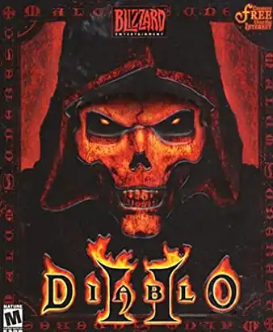

Sobre el Juego
Diablo II es un videojuego de rol de acción hack-and-slash
desarrollado por Blizzard
North y
publicado por
Blizzard Entertainment en 2000 para Microsoft Windows , Classic Mac OS y macOS . El juego, con sus fantasía
oscura y temas de terror , fue conceptualizado y diseñado por David Brevik y Erich Schaefer, quienes, con
Max
Schaefer, actuaron como líderes del proyecto en el juego. Los productores fueron Matthew Householder y Bill
Roper . El juego se desarrolló durante un período de 3 años, con un tiempo crítico de 1,5 años.
Ambientada poco después de los eventos de Diablo , el jugador controla a un nuevo héroe, intentando detener
la
destrucción desatada por el regreso de Diablo. Los 5 actos del juego presentan una variedad de ubicaciones y
escenarios para explorar y luchar, así como un mayor elenco de personajes para jugar e interactuar.
- PC, MAC OS
- XBOX, Playstation
- Actualmente en Moviles
Por qué es tan adictivo?
La época en la que mejor se palpa el ir y venir de las modas es la del colegio. El trompo, los tazos,
Pokémon,
Counter Strike, Diablo 2... La de ese último no fue mayor que la del resto, pero fue especial por volver a
unir
videojuegos y libretas después de años de enemistad. Llegabas a clase y sacabas los libros, el estuche
manchado
de típex y esa pequeña libreta donde dibujabas mapas y marcabas la posición de tu último botín junto a sus
estadísticas.
Entre clase y clase aprovechabas para comparar: “mira mi armadura Leviathan” “¿alguien se ha pasado ya el
acto
2?” “pues yo ya he matado a Baal” ¿Cosas de críos? Y un huevo. La fiebre del looteo de Diablo 2 no entendía
de
edades o género, era un virus que se concentraba en atacar tu productividad hasta destrozarla, una
enfermedad
que creíamos ya erradicada y ahora, una vez más y con sed de venganza, vuelve convertida en pandemia.
Información
Página Oficial de Blizzard
Diablo® II: Resurrected™ es una versión remasterizada
del
gran clásico de rol y acción Diablo® II.
Persigue al misterioso vagabundo oscuro y lucha contra
los
moradores del infierno mientras investigas el destino de los demonios mayores, Diablo, Mefisto y Baal,
ahora
hasta en 4K (2160p) en PC.
Características de Diablo II: Resurrected:
- Gráficos remasterizados: los monstruos, los héroes, los objetos, los hechizos... Todo ha resucitado
- Una historia épica narrada a lo largo de cinco actos distintos
- ..Mecánicas clásicas: el mismo Diablo II que conoces y te encanta, preservado
- Compatibilidad mejorada con Battle.net
- En un futuro incorporaremos la progresión cruzada para que puedas llevarte tus progresos dondequiera que vayas